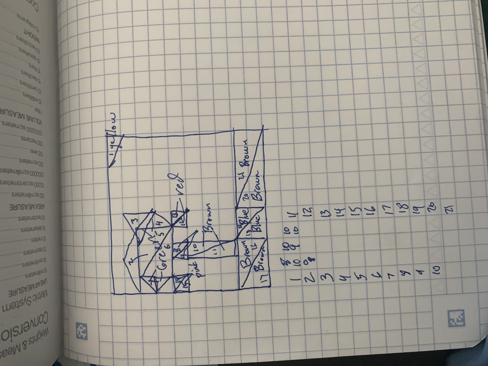

Green Red
Point Triangle Circle
Red
Size
Number of Circle Segments
Translusent Opaque
Clear
Amazing Drawing of Serene Lake Scene with Fruit Tree
The translusence slider is an implementation of "transparent paint".
Following is my sketch for my drawing!
